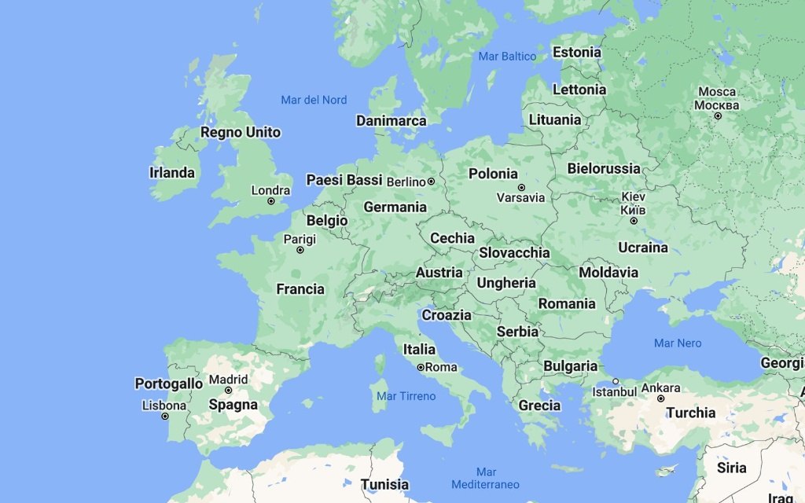
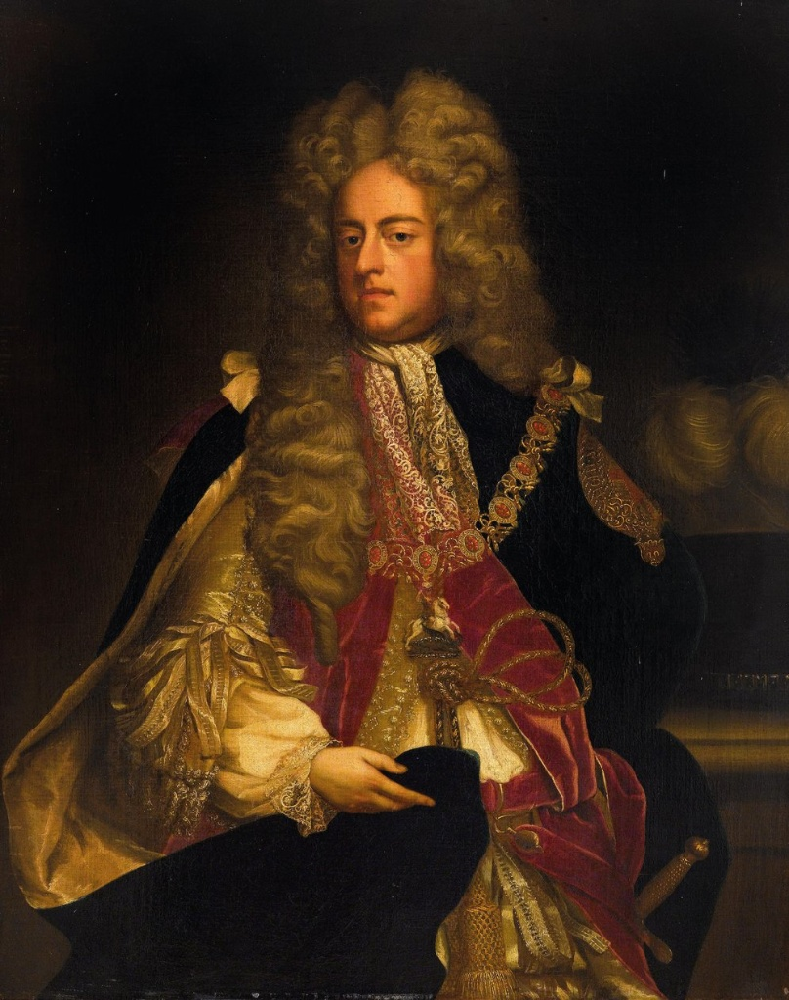

"I speak little English and spend most of my reign in Hanover!" 🇬🇧❌

For classroom presentation with interactive whiteboard
Home study mode with primary sources and text-to-speech
[A] or [B] directly, [TAB] to navigate, [ESC] to go back


Sources, text-to-speech engine and study tools under construction...